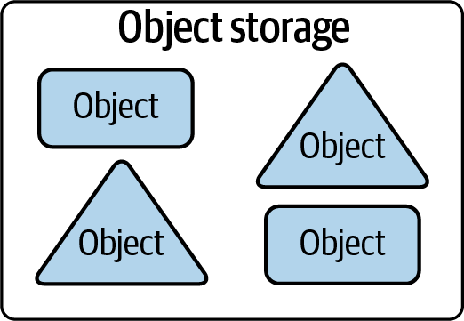
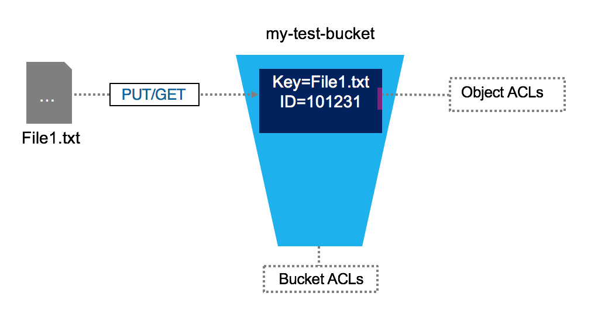
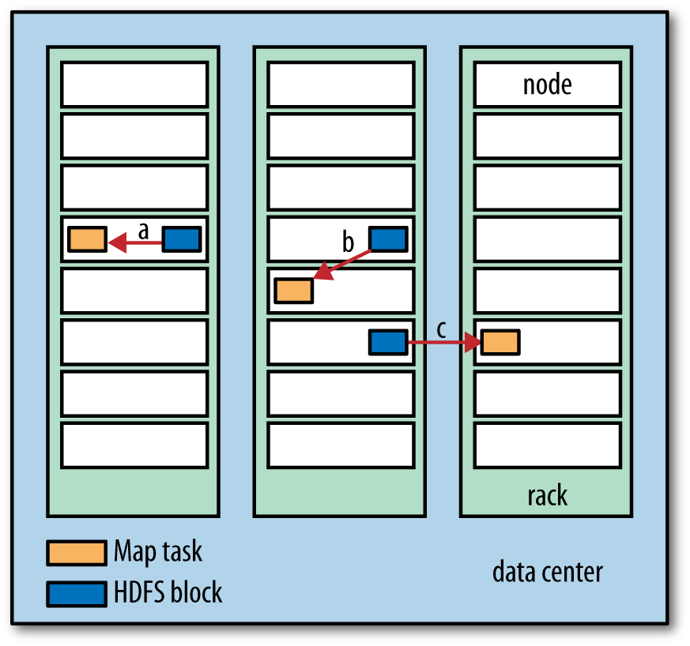
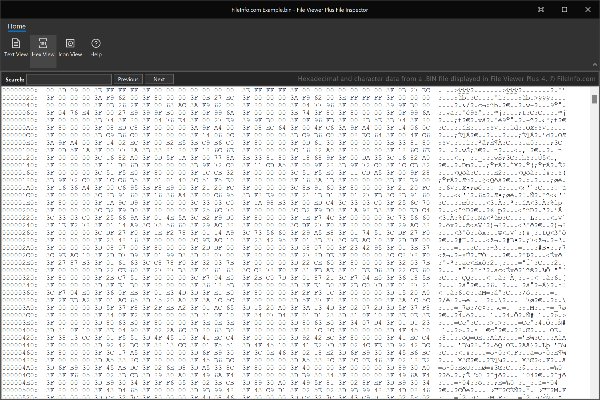
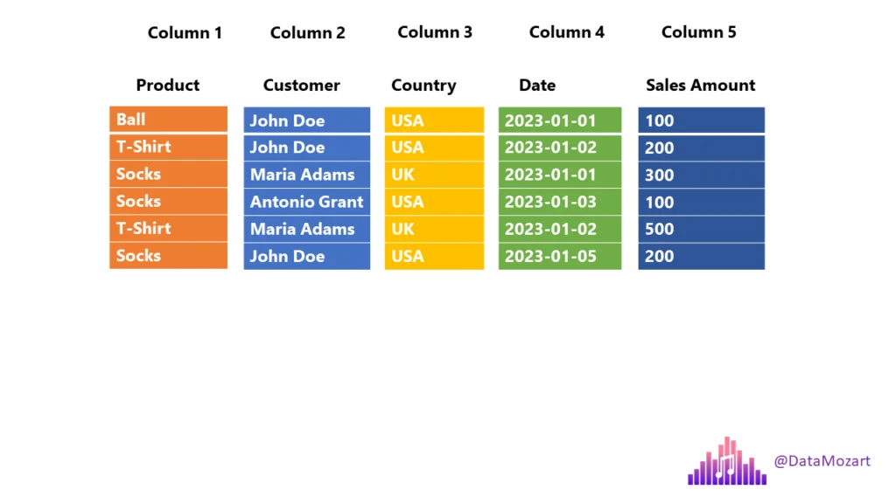
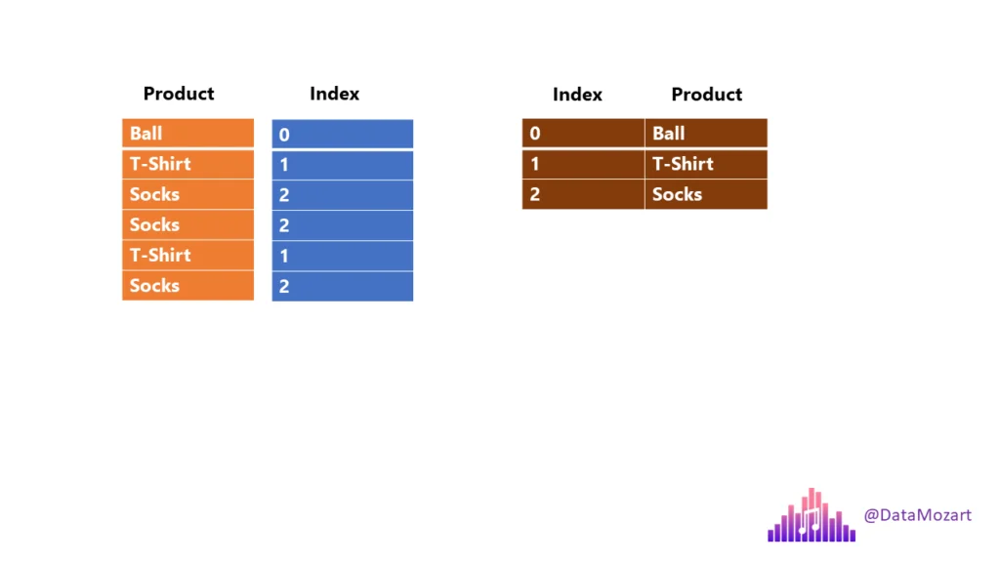
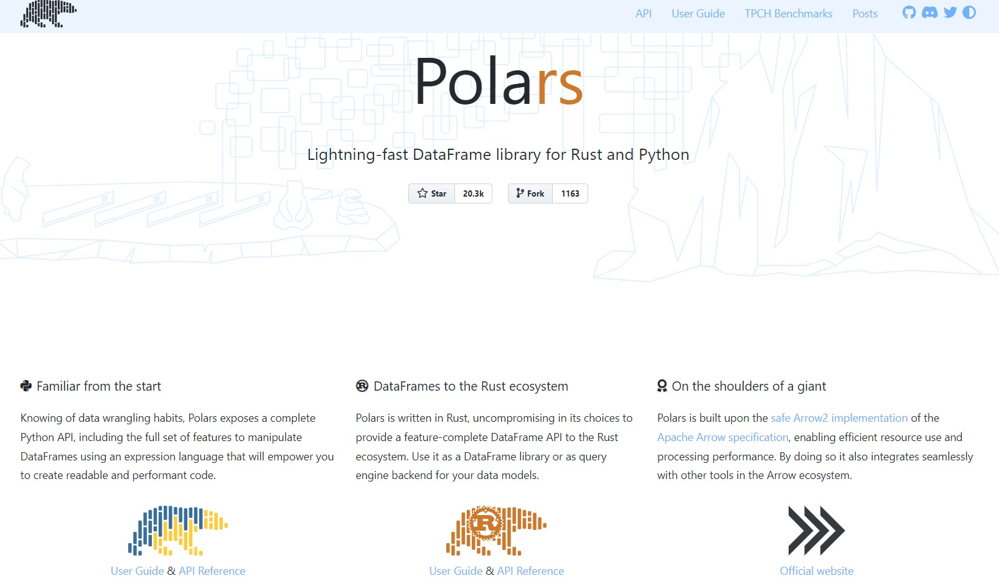
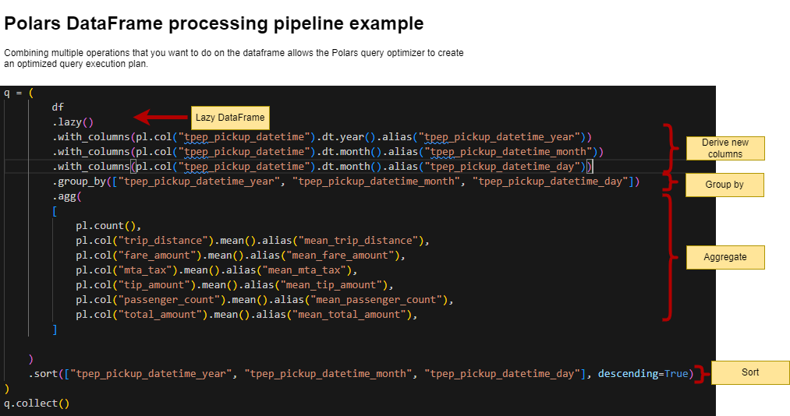

Week 4: DuckDB, Polars, File Formats
DSAN 6000: Big Data and Cloud Computing
Fall 2025
Monday, September 15, 2025
Agenda and Goals for Today
Lecture
- Distributed file systems
- Modern file types
- Working with large tabular data on a single node
- DuckDB
- Polars
Lab
- Run a similar task with Pandas, polars and duckdb
Logistics and Review
Deadlines
Assignment 1: Python Skills Due Sept 5 11:59pmLab 2: Cloud Tooling Due Sept 5 6pmAssignment 2: Shell & Linux Due Sept 11 11:59pmLab 3: Parallel Computing Due Sept 12 6pm- Assignment 3: Parallelization Due Sept 18 11:59pm
- Lab 4: Docker and Lambda Due Sept 19 6pm
- Assignment 4: Containers Due Sept 25 11:59pm
- Lab 5: DuckDB & Polars Due Sept 26 6pm
Look back and ahead
- Continue to use Slack for questions!
- Docker (containerization)
- Lambda functions
- Coming up: Spark and project
Filesystems
Raw Ingredients of Storage Systems
- Disk drives (magnetic HDDs or SSDs)
- RAM
- Networking and CPU
- Serialization
- Compression
- Caching

Single-Machine vs. Distributed Storage

From Reis and Housley (2022)
Single-Machine
- They are commonly used for storing operating system files, application files, and user data files.
- Filesystems are also used in databases to store data files, transaction logs, and backups.
Distributed Storage
- A distributed filesystem is a type of filesystem that spans multiple computers.
- It provides a unified view of files across all the computers in the system.
- Have existed before cloud
File Storage Types
Local Disk
- OS-managed filesystems on local disk partition:
- NTFS (Windows)
- HFS+ (MacOS)
- ext4 (Linux)() on a local disk partition of SSD or magnetic disk
Network-Attached (NAS)
- Accessed by clients over a network
- Redundancy and reliability, fine-grained control of resources, storage pooling across multiple disks for large virtual volumes, and file sharing across multiple machines
Cloud Filesystems
- Not object store (more on that later)
- Not the virtual hard drive attached to a virtual machine
- Fully managed: Takes care of networking, managing disk clusters, failures, and configuration (Azure Files, Amazon Elastic Filesystem)
- Backed by Object Store
Based on Reis and Housley (2022)
Object Stores
- Somewhat confusing because object has several meanings in computer science.
- In this context, we’re talking about a specialized file-like construct. It could be any type of file: TXT, CSV, JSON, images, videos, audio



- Contains objects of all shapes and sizes: each gets a unique identifier
- Objects are immutable: cannot be modified in place (unlike local FS)
Distributed FS vs Object Store
| Distributed File System | Object Storage | |
|---|---|---|
| Organization | Files in hierarchical directories | Flat organization (though there can be overlays to provide hierarchical files structure) |
| Method | POSIX File Operations | REST API |
| Immutability | None: Random writes anywhere in file | Immutable: need to replace/append entire object |
| Performance | Performs best for smaller files | Performs best for large files |
| Scalability | Millions of files | Billions of objects |
Both provide:
- Fault tolerance
- Availability and consistency
Before: Data locality (for Hadoop)

Today: De-Coupling Storage from Compute

From Gopalan (2022)
Data-on-Disk Formats
- Plain Text (CSV, TSV, FWF)
- JSON
- Binary Files
Plain Text (CSV, TSV, FWF)

- Pay attention to encodings!
- Lines end in linefeed, carriage-return, or both together depending on the OS that generated
- Typically, a single line of text contains a single record
JSON
Warning
JSON files have two flavors: JSON Lines vs. JSON. Typically when we say data is in JSON format, we imply it’s JSON Lines which means that there is a single JSON object per line, and there are multiple lines.
JSON Lines
4 records, one per line, no end comma
Binary Files
Issues with Common File Formats (Especially CSV)
- Ubiquitous but highly error-prone
- Default delimiter: familiar character in English, the comma
- Ambiguities:
- Delimiter (comma, tab, semi-colon, custom)
- Quote characters (single or doble quote)
- Escaping to appropriately handle string data
- Doesn’t natively encode schema information
- No direct support for nested structures
- Encoding+schema must be configured on target system to ensure ingestion
- Autodetection provided in many cloud environments but is inappropriate for production ingestion (can be painfully slow)
- Data engineers often forced to work with CSV data and then build robust exception handling and error detection to ensure data quality (Pydantic!)
Introducing Apache Parquet
- Free, open-source, column-oriented data storage format created by Twitter and Cloudera (v1.0 released July 2013)
- Data stored in columnar format (as opposed to row format), designed for read and write performance
- Builds in schema information and natively supports nested data
- Supported by R and Python through Apache Arrow (more coming up!)
Traditional Row-Store


- Query: “How many balls did we sell?
- The engine must scan each and every row until the end!
Column-Store

Row Groups
Data is stored in row groups!
Only required fields
Metadata, compression, and dictionary encoding


Apache Arrow for In-Memory Analytics
Apache Arrow is a development platform for in-memory analytics. It contains a set of technologies that enable big data systems to process and move data fast. It specifies a standardized language-independent columnar memory format for flat and hierarchical data, organized for efficient analytic operations on modern hardware. (Topol and McKinney 2024)
Before Arrow
Topol and McKinney (2024)
After Arrow
Topol and McKinney (2024)
Arrow Compatibility

Topol and McKinney (2024)
Arrow Performance

Using Arrow with CSV and Parquet
Python
pyarrow or from pandas
Recommendation: save your intermediate and analytical datasets as Parquet!
Polars
Lightning-fast DataFrame library for Rust and Python
Before We Begin…
Pandas is a fast, powerful, flexible and easy to use open source data analysis and manipulation tool, built on top of the Python programming language.
Pandas is slow, but less slow if you use it the right way!
- Apache Arrow and the “10 Things I Hate About pandas” (A 2017 post from the creator of Pandas…))
- 50x faster data loading in Pandas: no problem (an old 2019 article…)
- Is Pandas really that slow?
- Pandas 2.0 and the arrow revolution
Polars
Why is Polars Faster than Pandas?
- Polars is written in Rust. Rust is compiled; Python is interpreted
- Compiled language: you generate the machine code only once then run it, subsequent runs do not need the compilation step.
- Interpreted language: code has to be parsed, interpreted and converted into machine code every single time.
- Parallelization: Vectorized operations can be executed in parallel on multiple cores
- Lazy evaluation: Polars supports two APIs lazy as well as eager evaluation (used by pandas). In lazy evaluation, a query is executed only when required. While in eager evaluation, a query is executed immediately.
- Polars uses Arrow for in-memory data representation. Similar to how pandas uses NumPy (Pandas 2 allows using Arrow as backend)
- Polars \(\approx\) in-memory DataFrame library + query optimizer
Ease of Use
Familiar API for users of Pandas: differences in syntax but still a Dataframe API making it straightforward to perform common operations such as filtering, aggregating, and joining data
Reading data
Selecting columns (see Pushdown optimization)
Ease of Use (contd.)
Filtering data
Though you can write Polars code that looks like Pandas, better to write idiomatic Polars code that takes advantage of Polars’ features
Migrating from Apache Spark: Whereas Spark DataFrame is a collection of rows, Polars DataFrame is closer to a collection of columns
Installation, Data Loading, and Basic Operations
Install via pip:
Import polars in your Python code and read data as usual:
import polars as pl
df = pl.read_parquet("s3://nyc-tlc/trip data/yellow_tripdata_2023-06.parquet")
df.head()
shape: (5, 19)
┌──────────┬────────────┬──────────────┬──────────────┬─────┬──────────────┬──────────────┬──────────────┬─────────────┐
│ VendorID ┆ tpep_picku ┆ tpep_dropoff ┆ passenger_co ┆ ... ┆ improvement_ ┆ total_amount ┆ congestion_s ┆ Airport_fee │
│ --- ┆ p_datetime ┆ _datetime ┆ unt ┆ ┆ surcharge ┆ --- ┆ urcharge ┆ --- │
│ i32 ┆ --- ┆ --- ┆ --- ┆ ┆ --- ┆ f64 ┆ --- ┆ f64 │
│ ┆ datetime[n ┆ datetime[ns] ┆ i64 ┆ ┆ f64 ┆ ┆ f64 ┆ │
│ ┆ s] ┆ ┆ ┆ ┆ ┆ ┆ ┆ │
╞══════════╪════════════╪══════════════╪══════════════╪═════╪══════════════╪══════════════╪══════════════╪═════════════╡
│ 1 ┆ 2023-06-01 ┆ 2023-06-01 ┆ 1 ┆ ... ┆ 1.0 ┆ 33.6 ┆ 2.5 ┆ 0.0 │
│ ┆ 00:08:48 ┆ 00:29:41 ┆ ┆ ┆ ┆ ┆ ┆ │
│ 1 ┆ 2023-06-01 ┆ 2023-06-01 ┆ 0 ┆ ... ┆ 1.0 ┆ 23.6 ┆ 2.5 ┆ 0.0 │
│ ┆ 00:15:04 ┆ 00:25:18 ┆ ┆ ┆ ┆ ┆ ┆ │
│ 1 ┆ 2023-06-01 ┆ 2023-06-01 ┆ 1 ┆ ... ┆ 1.0 ┆ 60.05 ┆ 0.0 ┆ 1.75 │
└──────────┴────────────┴──────────────┴──────────────┴─────┴──────────────┴──────────────┴──────────────┴─────────────┘Polars Pipeline Example
We’ll run this as part of the lab in a little bit; think how you might code this in Pandas…
Polars pipeline
Further reading
DuckDB
An in-process SQL OLAP database management system
DuckDB
- DuckDB is an in-process SQL OLAP DB management system
- Like
sqlite, but for analytics. What does this mean? It means that your database runs inside your process, there are no servers to manage, no remote system to connect to. Easy to experiment with SQL-like syntax. - Vectorized processing: Loads chunks of data into memory (tries to keep everything in the CPU’s L1 and L2 cache) and is thus able to handle datasets bigger than the amount of RAM available.
- Supports Python, R and a host of other languages
- Important paper on DuckDB: Raasveldt and Mühleisen (2019)
Key Features
- Columnar Storage, Vectorized Query Processing: DuckDB contains a columnar-vectorized query execution engine, where queries are run on a large batch of values (a “vector”) in one operation
- Most analytical queries (think group by and summarize) or even data retrieval for training ML models require retrieving a subset of columns and now the entire row, columnar storage make this faster
- In-Memory Processing: All data needed for processing is brought within the process memory (recall that columnar storage format helps with this) making queries run faster (no DB call over the network)
- SQL Support: highly Postgres-compatible version of SQL1.
- ACID Compliance: Transactional guarantees (ACID properties) through bulk-optimized Multi-Version Concurrency Control (MVCC).
Use Cases for DuckDB
- Data Warehousing
- Business Intelligence
- Real-Time Analytics
- IoT Data Processing
DuckDB in the Wild
DuckDB: DIY

Datalake and DuckDB
DuckDB: Fully-Managed

MotherDuck Architecture
- Architecture and capabilities
- Seamlessly analyze data, whether it sits on your laptop, in the cloud or split between.
- Hybrid execution automatically plans each part of your query and determines where it’s best computed
- DuckDB Vs MotherDuck
Setting Up DuckDB
Configuration and Initialization: DuckDB is integrated into Python and R for efficient interactive data analysis (APIs for Java, C, C++, Julia, Swift, and others)
Connecting to DuckDB
Setting Up DuckDB (contd.)
Supported data formats: DuckDB can ingest data from a wide variety of formats – both on-disk and in-memory. See the data ingestion page for more information.
import duckdb
duckdb.read_csv('example.csv') # read a CSV file into a Relation
duckdb.read_parquet('example.parquet') # read a Parquet file into a Relation
duckdb.read_json('example.json') # read a JSON file into a Relation
duckdb.sql('SELECT * FROM "example.csv"') # directly query a CSV file
duckdb.sql('SELECT * FROM "example.parquet"') # directly query a Parquet file
duckdb.sql('SELECT * FROM "example.json"') # directly query a JSON fileQuerying DuckDB
Essential Reading
Basic SQL Queries
Aggregations and Grouping
Querying DuckDB (contd.)
Essential reading: FROM and JOIN clauses
Joins and Subqueries
Window Functions
powerplants = pd.read_csv("https://raw.githubusercontent.com/anly503/datasets/main/powerplants.csv", parse_dates=["date"])
q = """
SELECT "plant", "date",
AVG("MWh") OVER (
PARTITION BY "plant"
ORDER BY "date" ASC
RANGE BETWEEN INTERVAL 3 DAYS PRECEDING
AND INTERVAL 3 DAYS FOLLOWING)
AS "MWh 7-day Moving Average"
FROM powerplants
ORDER BY 1, 2;
"""
duckdb.sql(q)Using the DuckDB CLI and Shell
Install DuckDB CLI or use in browser via shell.duckdb.org for data exploration via SQL; Once installed, import a local file into the shell and run queries
You can download
powerplants.csvhereC:\Users\<username>\Downloads\duckdb_cli-windows-amd64> duckdb v0.8.1 6536a77232 Enter ".help" for usage hints. Connected to a transient in-memory database. Use ".open FILENAME" to reopen on a persistent database. D CREATE TABLE powerplants AS SELECT * FROM read_csv_auto('powerplants.csv'); D DESCRIBE powerplants; ┌─────────────┬─────────────┬─────────┬─────────┬─────────┬───────┐ │ column_name │ column_type │ null │ key │ default │ extra │ │ varchar │ varchar │ varchar │ varchar │ varchar │ int32 │ ├─────────────┼─────────────┼─────────┼─────────┼─────────┼───────┤ │ plant │ VARCHAR │ YES │ │ │ │ │ date │ DATE │ YES │ │ │ │ │ MWh │ BIGINT │ YES │ │ │ │ └─────────────┴─────────────┴─────────┴─────────┴─────────┴───────┘ D SELECT * from powerplants where plant='Boston' and date='2019-01-02'; ┌─────────┬────────────┬────────┐ │ plant │ date │ MWh │ │ varchar │ date │ int64 │ ├─────────┼────────────┼────────┤ │ Boston │ 2019-01-02 │ 564337 │ └─────────┴────────────┴────────┘
Profiling in DuckDB
Query Optimization: Use EXPLAIN and ANALYZE keywords to understand how your query is being executed and the time being spent in individual steps
DuckDB will use all the cores available on the underlying compute, but you can adjust this (Full configuration details here)
D select current_setting('threads');
┌────────────────────────────┐
│ current_setting('threads') │
│ int64 │
├────────────────────────────┤
│ 8 │
└────────────────────────────┘
D SET threads=4;
D select current_setting('threads');
┌────────────────────────────┐
│ current_setting('threads') │
│ int64 │
├────────────────────────────┤
│ 4 │
└────────────────────────────┘Benchmarks and Comparisons

Further Reading on DuckDB
- Parallel Grouped Aggregation in DuckDB
- Meta queries
- Profiling queries in DuckDB
- DuckDB tutorial for beginners
- DuckDB CLI API
- Using DuckDB in AWS Lambda
- Revisiting the Poor Man’s Data Lake with MotherDuck
- Supercharge your data processing with DuckDB
- Friendlier SQL with DuckDB
- Building and deploying data apps with DuckDB and Streamlit
Lab 4
References
DSAN 6000 Week 4: DuckDB, Polars, File Formats